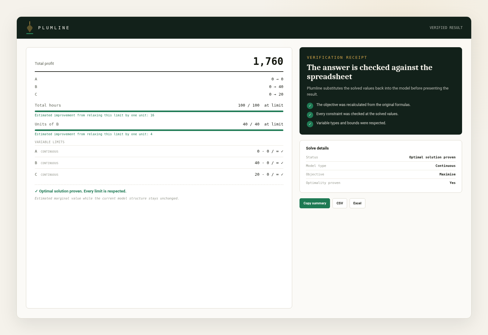
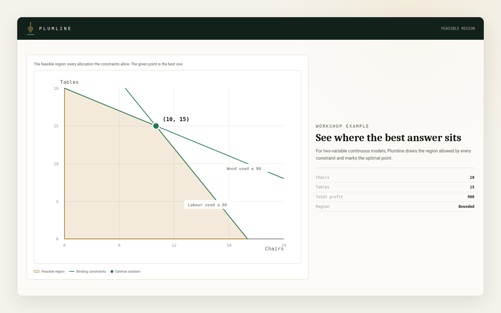

{kind=link}
{kind=link}
{kind=link}
See what Plumline understood
Before solving, Plumline shows the objective, decision cells and constraints it detected. You can correct anything that does not match your model.
Plumline reads a linear optimisation model from a spreadsheet-style grid and solves it directly in your browser. See which decisions it can model, what it checks after solving, and how it helps you understand the result.
Open the solver| Model type | Use it when | Example |
|---|---|---|
| Continuous models | Use decimal values when a decision can be divided, such as hours, weight, distance or budget. | Try a production plan |
| Integer models | Use whole numbers for decisions such as people, vehicles, batches or units produced. | Open workforce scheduling |
| Binary decisions | Use 0 or 1 for choices such as selecting a project, opening a site or accepting an order. | Try project selection |
| Mixed-integer models | Combine decimal values, whole numbers and binary choices in the same model. | Try supplier activation |
Good to know Continuous models: Plumline accepts linear relationships only. It stops and identifies formulas that are genuinely nonlinear.
Good to know Integer models: Proving the best result can take longer as an integer model grows.
Choose whether Plumline should find the highest value or the lowest cost, time, distance or waste.
Copy a range from Excel or Google Sheets and paste it into the grid.
Set limits as fixed numbers or formulas, and confirm the direction.
Download as CSV or Excel, or copy a plain text summary.

After solving, Plumline recalculates the objective from your formulas and compares it with the reported value.
Plumline substitutes the solved values into every constraint and shows whether each one is satisfied.
Your model is processed in the browser. Plumline does not upload it to a server.

Before solving, Plumline shows the objective, decision cells and constraints it detected. You can correct anything that does not match your model.
For eligible continuous models, Plumline estimates how the objective may change when a binding constraint is loosened by one unit.
Good to know This estimate is shown only for eligible binding constraints in continuous models.
For models with two decision variables, Plumline can draw the feasible region and show whether it is bounded or extends without a finite limit.
Good to know The chart appears only when the model can be represented reliably within the supported display range.
View the feasible regionUse Plumline in English, Spanish, Portuguese, German or French.
Solver and engine messages follow the language selected in Plumline.
Open one of the examples above or paste your own spreadsheet model into the solver. Plumline will show what it understood before solving and check the result afterwards.
Open the solver